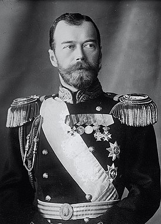

Каталог
Елизаве́та Петро́вна — императрица и самодержица
Всероссийская из династии Романовых с 25 ноября 1741 года по 25 декабря 1761,
младшая дочь Петра I и Екатерины I.
Пётр II ( 12 [23] октября 1715,
Санкт-Петербург — 19 [30] января 1730, Москва)-
— российский император из династии Романовых, внук Петра I.
Пётр I Алексе́евич — царь всея Руси с 1682 года,
первый император Всероссийский с 1721 года. Представитель династии Романовых.
А́нна Иоа́нновна, А́нна Ива́новна — императрица Всероссийская
с 1730 года из династии Романовых,
сменившая на престоле Петра II.
Екатери́на II Алексе́евна, Екатери́на Вели́кая,
урождённая Софи́я Авгу́ста Фредери́ка А́нгальт-Це́рбстская — императрица и
Самодержица Всероссийская.
Пётр III Фёдорович — император Всероссийский в 1762 году,
первый представитель Гольштейн-Готторпской династии на российском престоле.
С 1739 года — владетельный герцог Гольштейн-Готторпский.
Внук Петра I — сын его дочери Анны и Карла Фридриха Гольштейн-Готторпского.
Ива́н VI — император всероссийский из Брауншвейгской ветви династии Романовых.
Внук правящего герцога Мекленбург-Шверина Карла Леопольда.
Был в должности правителя с октября 1740 по ноябрь 1741 года,
во время эпохи дворцовых переворотов.
Михаи́л Фёдорович — первый русский царь из династии Романовых.
Правил с 27 марта 1613 года, был избран на царствование Земским собором 21 февраля 1613 года,
принял престол 14 марта 1613 года, венчался на царство 11 июля 1613 года.
.jpg)
Алексе́й Миха́йлович Тиша́йший — второй русский царь из династии Романовых, сын Михаила Фёдоровича и его второй жены Евдокии, отец Петра Великого.
Алексей Михайлович получил образование у своего воспитателя Бориса Морозова, прежде чем взойти на престол в возрасте 16 лет.
Па́вел I Петро́вич — император Всероссийский с 6 ноября 1796 года,
великий магистр Мальтийского ордена с 29 ноября 1798 года.
Представитель династии Гольштейн-Готторп-Романовых.
Сын Екатерины II и Петра III. Внук герцогини Голштинской Анны Петровны, дочери Петра Великого.
Алекса́ндр II Никола́евич — российский император из династии Романовых,
проводивший широкомасштабные реформы. Старший сын сначала великокняжеской,
а с 1825 года — императорской четы Николая Павловича и Александры Фёдоровны.
Удостоен особого эпитета в русской и болгарской историографии — Освободитель.
Никола́й I Па́влович — император Всероссийский с 19 ноября 1825 по 18 февраля 1855, царь Польский и великий князь Финляндский.
Третий сын императора Павла I и Марии Фёдоровны, родной брат императора Александра I,
отец императора Александра II. Внук Екатерины II и Петра III.
Фёдор III Алексе́евич — Государь, Царь и Великий Князь всея Руси с 1676 года,
из династии Романовых, сын царя Алексея Михайловича и царицы Марии Ильиничны, старший брат царей Ивана V и Петра I и родной младший брат царевны Софьи.
Со́фья Алексе́евна — царевна,
дочь царя Алексея Михайловича,
в 1682—1689 годах регент при младших братьях Иване и Петре.

Никола́й II Алекса́ндрович — последний император Всероссийский, царь Польский и великий князь Финляндский из династии Гольштейн-Готторп-Романовых.
Полковник гвардии; кроме того, от британских монархов имел звания адмирала флота Королевского ВМФ Великобритании и фельдмаршала британской армии.